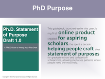
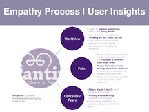
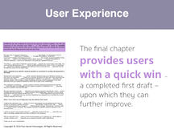
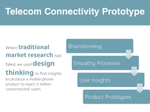
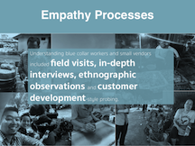
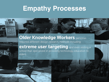
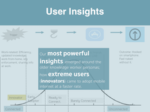
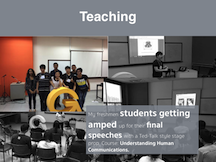

I’m excited to be immersed in product management where I will help shape the product vision and scope. I’ll build a product road map and manage the entire lifecycle from start to finish. While I’m hoping to polish my design and technical skills, I’m excited to be working directly with designers, developers and education specialist.
In helping launch a business unit responsible for product innovation, i’m looking to sharpen various entrepreneurial skills. Everything from product management to edtech to organizational management, I’ll be documenting my learning here and here.
I’m honing my skills in HTML/CSS, and Javascript by building mini-websites here.
Our goal is product-market fit by November 2017. And “at scale” by 2018.
My partner and I will be launching and growing X. We will develop a repeatable, smart process for developing, prototyping and commercializing education products.
We will learn from LearnEd’s experience scaling math and science products.
Here examples of projects I’ve worked on and products I continue to maintain. They include an online product and resource for young scholars, design research projects, teaching and workshops.

PhD Purpose
A statement of purpose guide for aspiring young scholars.

PhD Purpose
Empathy Process and User Insights gathered from primary and secondary sources.

PhD Purpose
A structured template for ease of user experience.

Telecom Connectivity
Using design thinking to connect 5 million “unconnected” users.

Telecom Connectivity
Field Research for user empathy and insight.

Telecom Connectivity
Emerging older knowledge worker persona.

Telecom Connectivity
User insights through extreme user adoption patterns.

Teaching
My Understanding Human Communications students at GSSE.
You can view the entire portfolio below.
Just a few kind words from some of the great people I have had the pleasure of helping.
“Paul's key strength is he knows how to bring the best out of you while guiding you through the admission application process. He asks the right questions to help you unlock your potential step by step: from a blank paper to a complete Statement of Purpose. Moreover, he can also help prepare you for the interview session as well.
I recommended him to several students who applied to top schools and universities in the U.S. All of them were satisfied with his coaching sessions, and of course, they were all admitted into their prospective institutions. Indeed I am one of his success cases and I have been successfully admitted into the doctoral program at Columbia University. Thank you so much, Paul. ”
Bank Apichai Chaiwinij
“I really have to thank Paul so much for his great help on my doctoral application. He is truly knowledgable and gave me constant, constructive feedback on my Statement of Purpose. He knows exactly what the admission committee are looking for and is able to bring my true potential to standout among all applicants. Paul gave me an analysis of my writing in depth. He identified the strengths and the points of improvement on my application. His advice has enhanced my Statement of Purpose immensely.
Paul, thanks again for your help.”
Sawaros (Sam) Thanapornsangsuth
“I had Paul helped me revise my SOP for my master's degree application and his constructive comments became very helpful. His reviews ranged from broad concepts of my SOP to details of sentence structures. Those comments helped me reflect back on my message, and in the end, greatly enhance the content of which I tried to convey.
For every written piece, especially for non-native speakers like me, it's very important to have peer reviews along the way to give comments with fresh perspectives. I would recommend Paul to anyone who's in the process of writing their SOP's or other pieces.”
Wan Chantavilasvong
“..Forthcoming..”
......
Customer
“..Forthcoming..”
......
Customer
Paul Apivat
th.linkedin.com/in/apivath
Resumé? Get it here.
{kind=link}
{kind=link}
{kind=link}
{kind=link}
{kind=link}
{kind=link}
{kind=link}
{kind=link}
{kind=link}